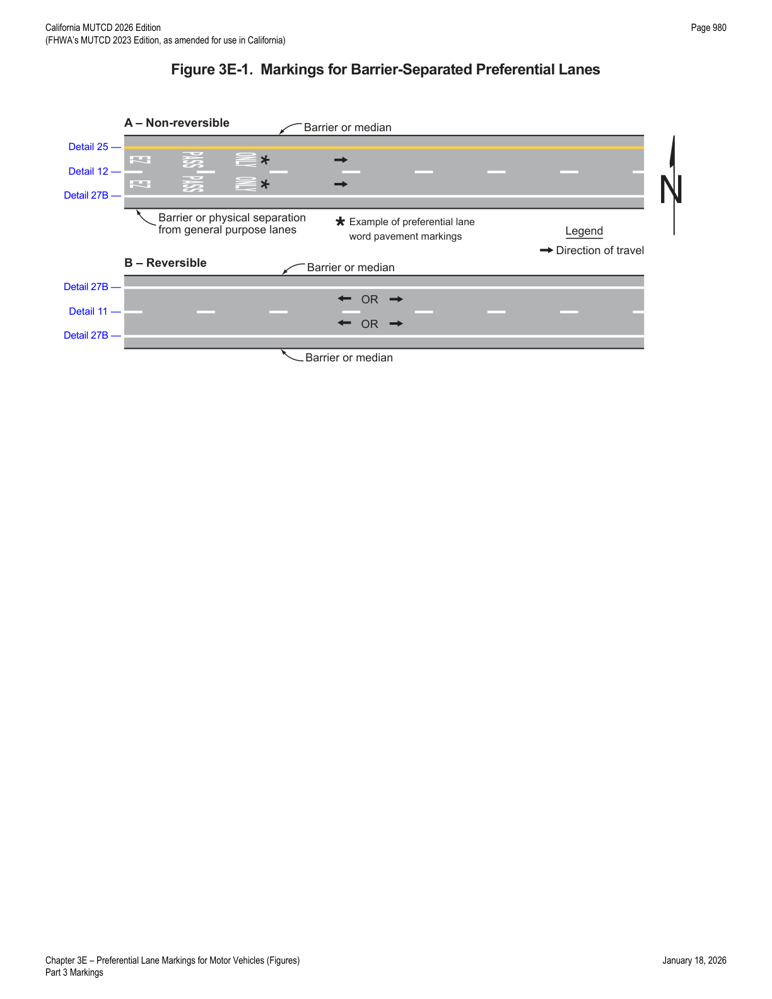
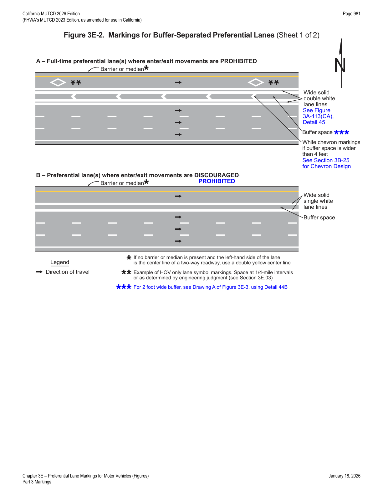
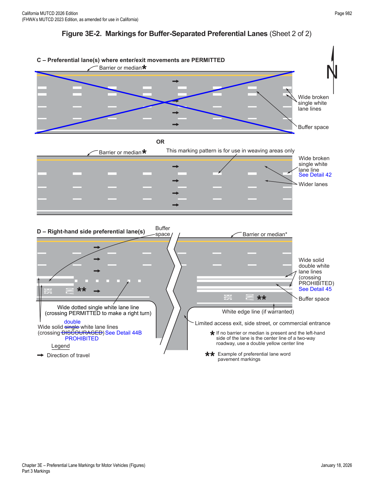
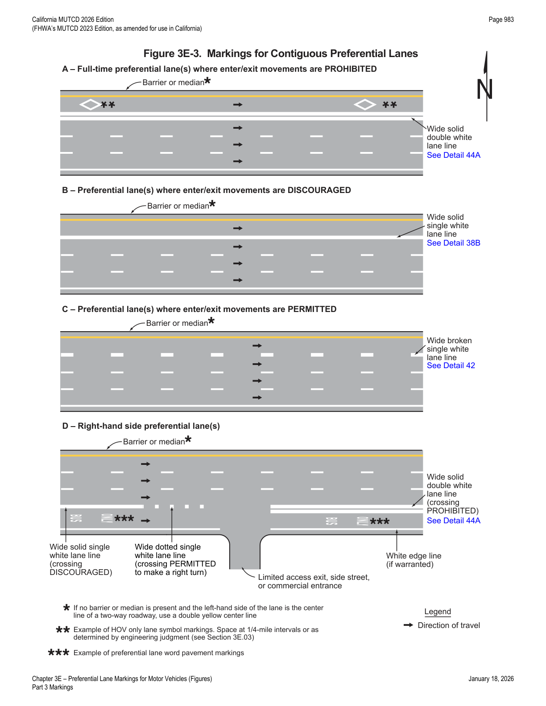
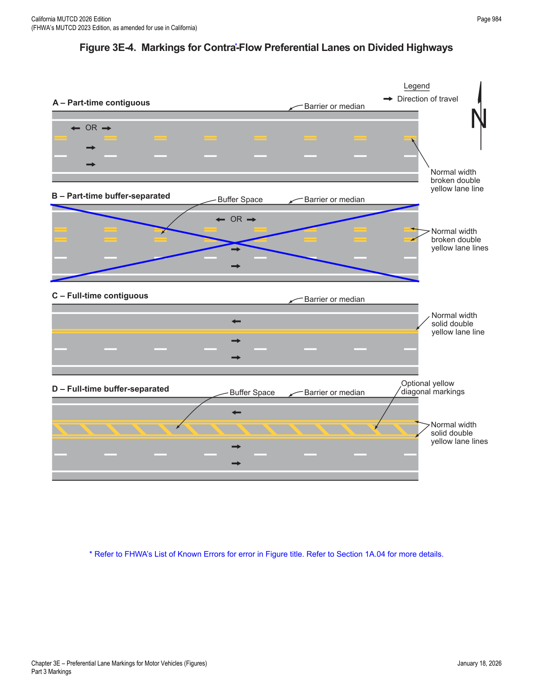
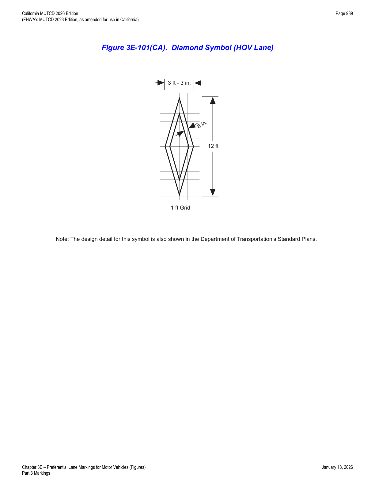
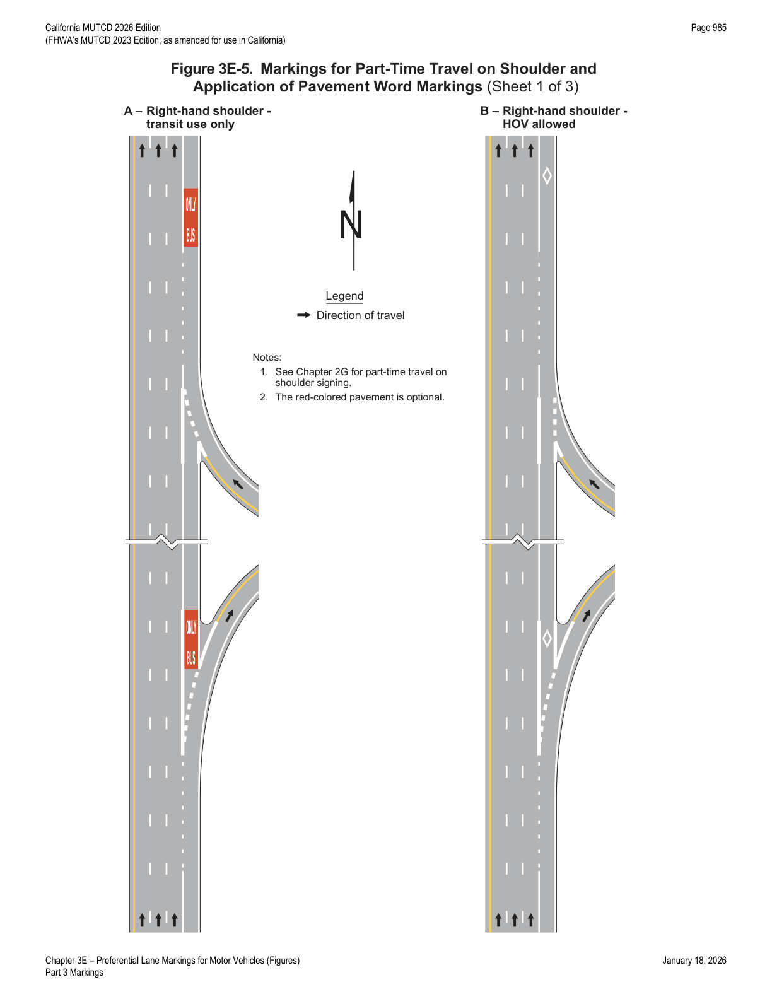
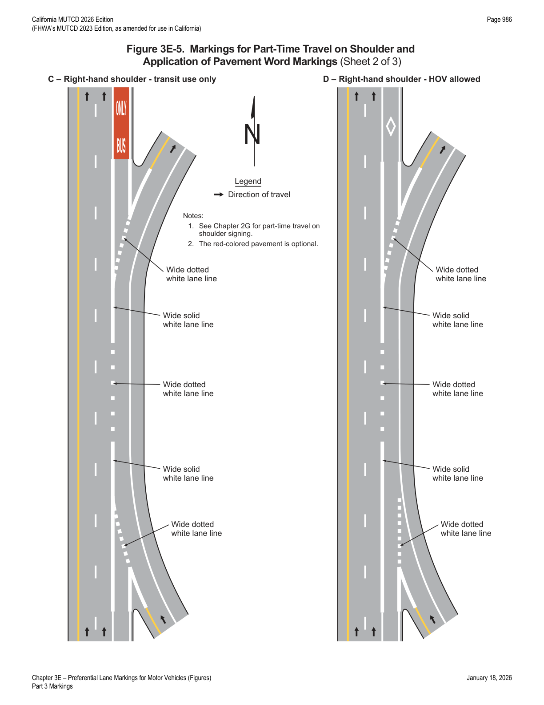
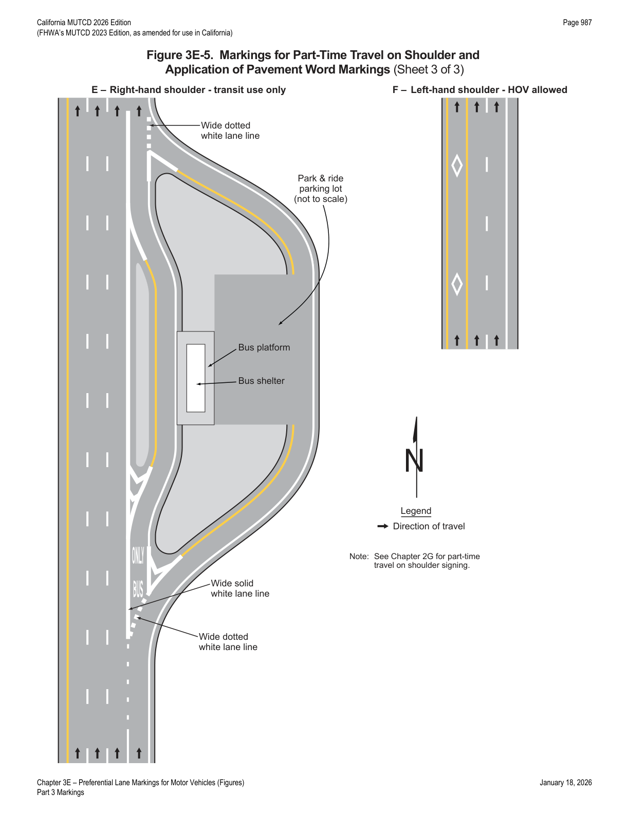
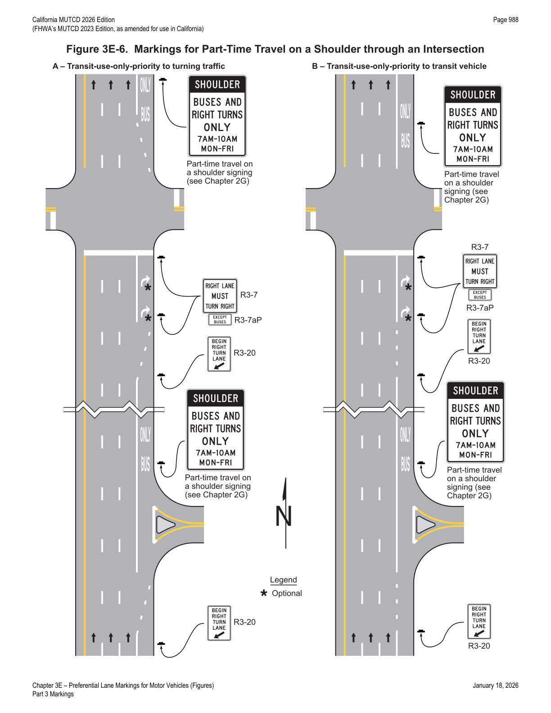

Part 3 · Markings · Chapter 3E
Preferential Lane Markings for Motor Vehicles
Pavement marking design for HOV, toll, priced-managed, transit, and other preferential lanes, including barrier-, buffer-, and contiguous-separated configurations, counter-flow lanes, word/symbol markings, and part-time shoulder travel.
3E.01General
- 01Preferential lanes are established for one or more of a wide variety of special uses, including, but not limited to, high-occupancy vehicle (HOV) lanes, electronic toll collection (ETC) lanes, price-managed lanes, bus only lanes, taxi only lanes, and light rail transit only lanes.
- 02This Chapter contains the pavement marking provisions for preferential lanes used by motor vehicles and light rail transit. Part 9 contains information for pavement markings for bicycle lanes.
- 03Chapter 3H contains information for the use and application of colored pavement that can be used in preferential lanes to supplement the pavement markings described in this Chapter.
3E.02Longitudinal Markings
- 01Preferential lanes can take many forms depending on the level of usage and the design of the facility. They might be barrier-separated or buffer-separated from the adjacent general-purpose lanes, or they might be contiguous with the adjacent general-purpose lanes. Barrier-separated preferential lanes might be operated in a constant direction or be operated as reversible lanes. Some reversible preferential lanes on a divided highway might be operated counter-flow to the direction of traffic on the immediately adjacent general-purpose lanes. Section 1C.02 contains definitions of these terms.
- 02Preferential lanes might be operated full-time (24 hours per day on all days), for extended periods of the day, part-time (restricted usage during specific hours on specified days), or on a variable basis (such as a strategy for a managed lane).
- 03The left-hand and right-hand edge lines and lane lines used for preferential lanes that are adjacent to general-purpose lanes where traffic is flowing in the same direction shall be in accordance with Table 3E-1.
- 04If there are two or more preferential lanes for traffic moving in the same direction, the lane lines between the preferential lanes shall be normal width broken white lines.
- 05Preferential lanes for motor vehicles shall have appropriate regulatory signs in accordance with Sections 2G.03 through 2G.07.
| Type of Preferential Lane | Left-Hand Line | Right-Hand Line |
|---|---|---|
| Barrier-Separated, Non-Reversible | A normal solid single yellow edge line | A normal solid single white edge line (see Drawing A in Figure 3E-1) |
| Barrier-Separated, Reversible | A normal solid single white edge line | A normal solid single white edge line (see Drawing B in Figure 3E-1) |
| Buffer-Separated, Left-Hand Side | A normal solid single yellow edge line | A wide solid double white line along both edges of the buffer space (two sets of wide solid double white lines) where crossing the buffer space is prohibited, and the buffer space is 4 feet or greater (see Drawing A in Figure 3E-3 and Detail 45 in Figure 3A-113(CA)); or a wide solid single white line along both edges of the buffer space (a set of wide solid double white lines) where crossing the buffer space is discouraged, and the buffer space is 2 feet or greater (see Drawing B in Figure 3E-2 and Detail 44B in Figure 3A-113(CA)); or a wide broken single white line along both edges of the buffer space, or a wide broken single white line within the buffer space (resulting in wider lanes), where crossing is permitted (see bottom half of Drawing C in Figure 3E-2 and Detail 42 in Figure 3A-113(CA)) |
| Buffer-Separated, Right-Hand Side | A wide solid double white line along both edges of the buffer space (two sets of wide solid double white lines) where crossing the buffer space is prohibited, and the buffer space is 4 feet or greater; or a wide solid single white line along both edges of the buffer space (a set of wide solid double white lines) where crossing the buffer space is discouraged, and the buffer space is 2 feet or greater (see Drawing D in Figure 3E-2, Detail 45 in Figure 3A-113(CA), and Detail 44B in Figure 3A-113(CA)) | A wide broken single white line along both edges of the buffer space, or a wide broken single white line within the buffer space (resulting in wider lanes), where crossing is permitted (see Drawing D in Figure 3E-2 and Detail 42 in Figure 3A-113(CA)); or a wide dotted single white line within the buffer space (resulting in wider lanes) where crossing is permitted for any vehicle to perform a right-turn maneuver (see Drawing D in Figure 3E-2 and Detail 37 in Figure 3A-111(CA)); or a normal solid single white edge line (if warranted) |
| Contiguous, Left-Hand Side | A normal solid single yellow edge line | A wide solid double white lane line where crossing is prohibited (see Drawing A in Figure 3E-3 and Detail 44A in Figure 3A-112(CA)); or a wide solid single white lane line where crossing is discouraged (see Drawing B in Figure 3E-3 and Detail 38B in Figure 3A-113(CA)); or a wide broken single white lane line where crossing is permitted (see Drawing C in Figure 3E-3 and Detail 42 in Figure 3A-113(CA)) |
| Contiguous, Right-Hand Side | A wide solid double white lane line where crossing is prohibited (see Drawing D in Figure 3E-3 and Detail 44A in Figure 3A-113(CA)); or a wide solid single white lane line where crossing is discouraged (see Drawing D in Figure 3E-3 and Detail 38B in Figure 3A-112(CA)) | A wide broken single white lane line where crossing is permitted (see Drawing D in Figure 3E-3 and Detail 42 in Figure 3A-113(CA)); or a wide dotted single white lane line where crossing is permitted for any vehicle to perform a right-turn maneuver (see Drawing D in Figure 3E-3 and Detail 37 in Figure 3A-111(CA)); or a normal solid single white lane line (if warranted) |
Notes to Table 3E-1: (1) If there are two or more preferential lanes, the lane lines between the preferential lanes shall be normal broken white lines. (2) The standard lane markings listed in this table are provided in a tabular format for reference.
- 06Figure 3E-1 illustrates pavement markings used for barrier-separated preferential lanes. Figure 3E-2 illustrates pavement markings used for buffer-separated preferential lanes. Figure 3E-3 illustrates pavement markings used for contiguous preferential lanes.

- 07Engineering judgment should determine the need for supplemental devices such as tubular markers, traffic cones, or other channelizing devices (see Chapter 3I).
- 08Where preferential lanes and other travel lanes are separated by a buffer space wider than 4 feet and crossing the buffer space is prohibited, chevron markings (see Section 3B.25) should be placed in the buffer area (see Drawing A in Figure 3E-2).
- 09The buffer space for a conventional road should be designed so that it is not misinterpreted as on-street parking, a bicycle lane, or any other type of lane.
- 09aBuffer spaces between 4 feet and 12 feet (refer to Figure 3A-113(CA), Detail 45) should be avoided, except when transitioning between narrow and wide buffer areas.
- 10If a full-time or part-time contiguous preferential lane is separated from the other travel lanes by a wide broken single white line (see Drawing C in Figure 3E-3), the spacing or skip pattern of the line may be reduced and the width of the line may be increased.
- 10aRefer to FHWA's List of Known Errors for error between Paragraphs 10 and 11. Refer to Section 1A.04 for more details.


- 11At direct exits from a preferential lane, dotted white line markings shall be used to separate the tapered or parallel deceleration lane for the direct exit (including the taper) from the adjacent continuing preferential through lane, to reduce the chance of unintended exit maneuvers.
- 12Signs (see Section 2B.34), lane-use control signals (see Chapter 4T), or both shall be used to supplement the reversible lane markings on a divided highway where a part-time counter-flow preferential lane is present.
- 13The longitudinal pavement markings used for preferential lanes that are adjacent to general-purpose lanes where traffic is flowing in the opposite direction (see Figure 3E-4) shall be in accordance with Table 3E-2.

| Type of Preferential Lane | Center Line on Left-Hand Side | Edge Line on Left-Hand Side |
|---|---|---|
| Part-Time Contiguous | A normal width broken double yellow line | A normal solid single white line (if warranted) |
| Part-Time Buffer-Separated | A normal width broken double yellow line along both edges of the buffer space | A normal solid single white line (if warranted) |
| Full-Time Contiguous | A normal width solid double yellow line | A normal solid single white line (if warranted) |
| Full-Time Buffer-Separated | A normal width solid double yellow line along both edges of the buffer space | A normal solid single white line (if warranted) |
- 14Figure 3E-4 illustrates pavement markings used for counter-flow preferential lanes on divided highways or on transitions to and from other divided highways such as bridges and crossovers.
- 15Cones, tubular markers, or other channelizing devices (see Chapter 3I) may also be used in addition to longitudinal markings to separate the opposing lanes when a counter-flow preferential lane operation is in effect.

In practice: Tables 3E-1 and 3E-2 are the two tables engineers reference constantly when specifying a preferential lane's cross-section — 3E-1 for same-direction barrier/buffer/contiguous configurations, 3E-2 for counter-flow (contra-flow) lanes on divided highways.
3E.03Preferential Lane Word and Symbol Markings
- 01Sections 3B.20 through 3B.22 contain information on general applications of word and symbol markings.
- 02When a preferential lane is established, the preferential lane shall be marked with one or more of the following word or symbol markings for the preferential lane use specified: (A) HOV lane — white lines formed in a diamond-shaped symbol or the word message HOV. The diamond shall be at least 2.5 feet wide and 12 feet in length. The lines shall be at least 6 inches in width. Refer to Figure 3E-101(CA). (B) ETC Account-Only lane — except as provided in Paragraph 8 of this Section, a word marking or pictograph using the name of the ETC payment system required for use of the lane, such as E-Z PASS ONLY. (C) Priced managed lane — the word marking EXPRESS or EXPRESS LANE(S) (see Section 2G.17). (D) Bus only lane or bus stop — the word marking BUS ONLY or BUS STOP. (E) Taxi only lane or taxi stand — the word marking TAXI ONLY or TAXI STAND. (F) Light rail transit lane — the word marking LRT ONLY. (G) Other type of preferential lane — a word marking appropriate to the restriction.

- 03If multiple preferential lane uses are allowed in a single lane, the word or symbol marking for each preferential lane should be used.
- 04Pavement word or symbol markings for motorcycles and Inherently Low Emission Vehicles (ILEV) shall not be used to mark the preferential lane if motorcycles and ILEVs are allowed to use the preferential lane.
- 05Motorcycles and Inherently Low Emission Vehicles (ILEV) that are allowed to use a preferential lane are granted an exception such as through an established High-Occupancy Vehicle (HOV) regulation. Communicating that motorcycles and ILEVs are allowed to use the preferential lane is accomplished through regulatory signing (see Sections 2G.03 and 2G.04) that complements HOV signing.
- 06Static or changeable message regulatory signs (see Sections 2G.03 through 2G.07) shall be used with preferential lane word or symbol markings.
- 07All preferential lane word and symbol markings shall be white and shall be positioned laterally in the approximate center of the preferential lane.
- 08Preferential lane-use symbol or word markings may be omitted at toll plazas where physical conditions preclude the use of the markings.
- 09Lane-use arrow markings may be placed on the curb lanes on approaches to intersections to signify non-preferential road users can use the lane for turning movements.
- 10All longitudinal pavement markings, as well as word and symbol pavement markings, associated with a preferential lane should end at approximately where the Preferential Lane Ends (R3-12a or R3-12c) sign (see Section 2G.07) designating the downstream end of the preferential only lane restriction is installed.
- 11The spacing of the markings should be based on engineering judgment that considers the operating speed, block lengths, distance from intersections, and other factors that affect clear communication to the road user. A spacing of 180 feet should be used at the maximum interval for preferential lane markings on on-ramps.
- 12In addition to a regular spacing interval, the preferential lane marking should be placed at strategic locations such as major decision points, direct exit ramp departures from the preferential lane, and along access openings to and from adjacent general-purpose lanes. At decision points, the preferential lane marking should be placed on all applicable lanes and should be visible to approaching traffic for all available departures. At direct exits from preferential lanes where extra emphasis is needed, the use of word markings (such as "EXIT" or "EXIT ONLY") in the deceleration lane for the direct exit and/or on the direct exit ramp itself just beyond the exit gore should be considered.
- 13A numeral indicating the vehicle occupancy requirements established for a high-occupancy vehicle lane may be included in sequence after the diamond symbol or HOV word message.
- 14For State highways, refer to Caltrans' High Occupancy Vehicle (HOV) Guidelines and Ramp Meter Design Manual. Refer to Section 1A.05 for information regarding these publications.
In practice: the HOV diamond dimensions are exact and frequently cited — at least 2.5 ft wide by 12 ft long, with lines at least 6 inches wide — and the 180 ft maximum marking spacing on on-ramps is the go-to figure for restriping plan sheets.
3E.04Markings for Part-Time Travel on a Shoulder
- 01Shoulders are sometimes used to add capacity to a roadway in peak hour conditions to provide for transit or HOV priority or to provide higher throughput when open to all traffic.
- 02A shoulder that has been opened to travel on a permanent, rather than a part-time basis is considered to be a travel lane and is signed and marked in accordance with other provisions of this Manual.
- 03When part-time travel on a shoulder is open to all traffic, pavement word and symbol markings shall not be used in the shoulder.
- 04When a shoulder is assigned part-time to a particular class or classes of vehicles, the shoulder shall be marked with one or more pavement word markings that identify the special use of the shoulder such as BUS ONLY, TRANSIT ONLY, HOV, or instead of the HOV pavement word marking, white lines formed in a diamond-shaped symbol (see Section 3E.03). A pavement word or symbol marking shall be provided in the shoulder immediately after exit and entry ramps (see Figure 3E-5) or immediately departing an intersection at the full-width shoulder (see Figure 3E-6). Appropriate regulatory signing (see Section 2G.03) shall be installed with the pavement word or symbol markings.
- 05The channelizing line emanating from the entrance ramp shall be a wide dotted line through the intersecting alignment of the shoulder to the theoretical gore (see Drawings A and B in Figure 3E-5). At exit ramps, the channelizing line proceeding from the theoretical gore across the intersecting alignment of the shoulder shall be a wide dotted line (see Figure 3E-5).
- 06If used, the extension of the channelizing line at entrance ramps proceeding from the theoretical gore across the opening of the on-ramp alignment shall be a wide dotted line (see Drawing C in Figure 3E-5) where it is demonstrated that traffic entering from an on-ramp stops or yields to traffic on the shoulder of the highway mainline.
- 07An additional outside solid edge line shall be provided on the shoulder in accordance with Sections 3B.09 and 3B.10.
- 08Changes in edge line pattern or direction should occur at appropriate regulatory signs.
- 09At locations where traffic is allowed to enter, exit, or merge with the shoulder, a dotted edge line may be used either in a continuous manner or angled to the pavement edge (see Figure 3E-6).
- 10Red-colored pavement (see Section 3H.07) may be used on shoulders that allow only transit vehicles.
- 11If used, red-colored pavement shall be discontinued on the shoulder through the influence area of the ramp (see Figure 3E-5).




In practice: Figure 3E-5's wide dotted channelizing lines at ramp gores, paired with the required outside solid edge line, are what most often gets misapplied on shoulder-running transit/HOV projects — note that red-colored pavement, where used, must stop through the ramp's influence area rather than running continuously.
★ Key Takeaways — Chapter 3E
- Edge and lane line design for same-direction preferential lanes (barrier-, buffer-, or contiguous-separated) follows Table 3E-1; counter-flow (contra-flow) preferential lanes on divided highways follow Table 3E-2. Two or more same-direction preferential lanes are always separated by normal width broken white lines.
- Buffer spaces of 4 ft or more warrant chevron markings when crossing is prohibited; buffer widths between 4 ft and 12 ft should be avoided except when transitioning between narrow and wide buffers.
- At direct exits, dotted white lines shall separate the deceleration lane from the continuing preferential lane, and reversible/counter-flow lanes shall be supplemented by signs and/or lane-use control signals.
- Word/symbol markings are mandatory once a preferential lane is established: HOV diamond at least 2.5 ft wide by 12 ft long (lines at least 6 in. wide), or words such as BUS ONLY, TAXI ONLY, LRT ONLY, EXPRESS/EXPRESS LANE(S), or an ETC system name; all markings shall be white, centered laterally, and paired with regulatory signs.
- Motorcycles and ILEVs permitted in an HOV lane shall not be denoted by pavement word/symbol markings — that exception is communicated only through regulatory signing.
- Marking spacing should reflect engineering judgment, with 180 feet as the recommended maximum interval on on-ramps, plus placement at decision points, direct exits, and access openings.
- Part-time shoulder-running lanes require word markings (BUS ONLY, TRANSIT ONLY, HOV, or the diamond symbol) placed immediately after ramps or intersections, wide dotted channelizing lines at ramp gores, and an additional outside solid edge line; optional red-colored pavement for transit-only shoulders must be discontinued through a ramp's influence area.